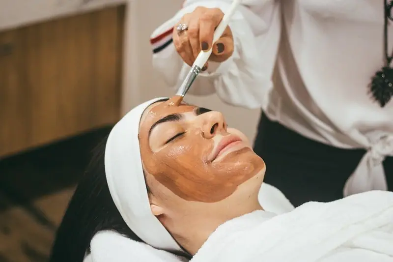
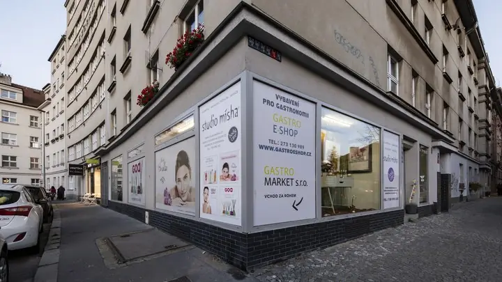
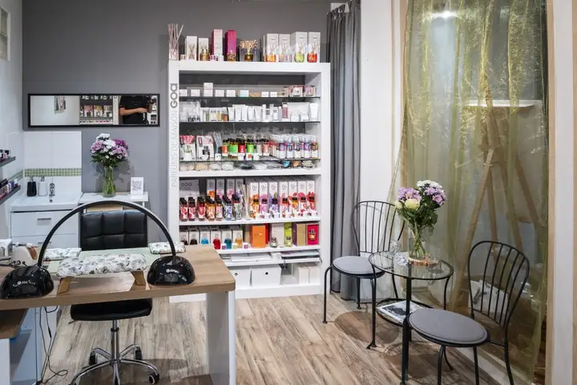
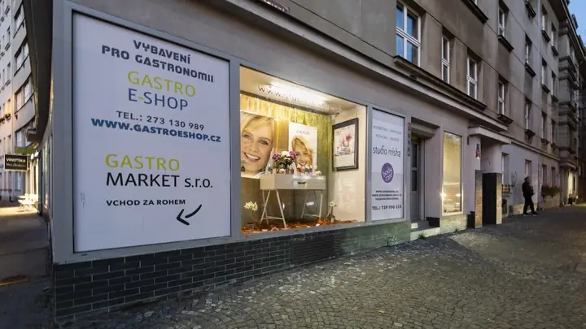
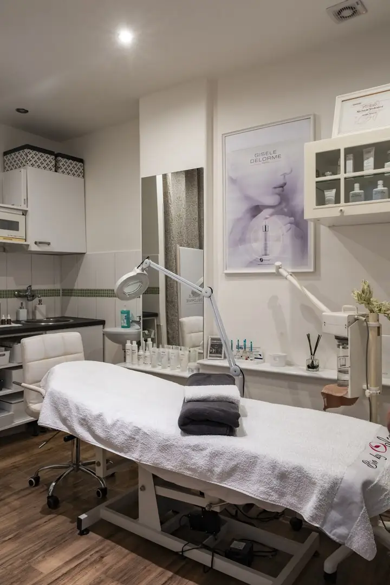
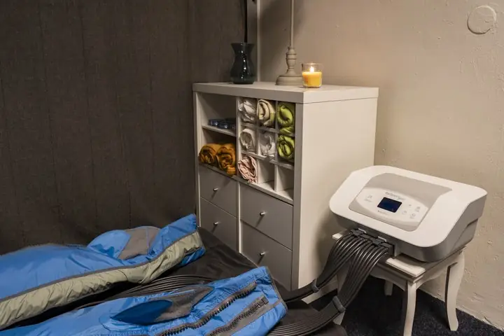
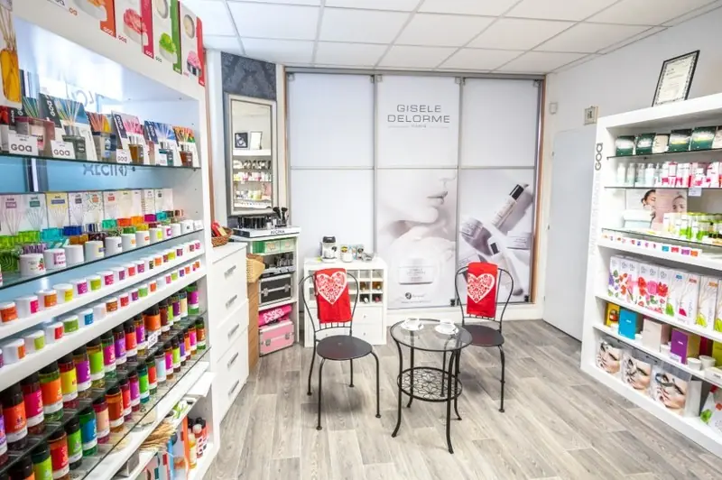

Články a průvodce péčí
Přehledné 30slovné souhrny i podrobné návody z naší praxe v Praze 4 – Braníku. Zjistěte, jaké ošetření pleti, vlasů, těla či nehtů je pro vás nejvhodnější.

Hloubkové čištění pleti v Praze 4: Jak probíhá a jak často na něj chodit
Profesionální hloubkové čištění pleti šetrně uvolňuje ucpané póry, odstraňuje komedony bez rizika jizviček a v kombinaci se séry Rosa Graf či Natinuel udržuje pleť čistou po dobu 4 až 6 týdnů.
Číst celý článek
Problematická pleť a akné v dospělosti: Jak fungují bioceutika a peeling Natinuel
Bioceutické ošetření Natinuel Akné stop kombinuje šetrné chemické peelingy a aktivní látky, které regulují tvorbu kožního mazu, působí protizánětlivě a vyhlazují stopy po akné bez přesušení pleti.
Číst celý článek
Anti-aging ošetření pleti po 35. a 40. roce: Co skutečně funguje bez jehel
Pravidelné anti-aging ošetření s liftingovou masáží obličeje a dekoltu a koncentrovanými séry Gisele Delorme, Rosa Graf či Natinuel zpevňuje kontury, vyhlazuje jemné vrásky a vrací pleti pružnost.
Číst celý článek
Neinvazivní karboxyterapie pleti (RxCarboxy): Okysličení a biostimulace buněk
Neinvazivní karboxyterapie Natinuel RxCarboxy využívá Bohrův efekt k intenzivnímu okysličení buněk zevnitř, čímž bez jediné jehly okamžitě projasňuje zašedlou pleť, zmírňuje otoky a stimuluje tvorbu kolagenu.
Číst celý článek
Milie na obličeji a kolem očí: Proč vznikají a jak je bezpečně odstranit
Milie jsou drobné keratinové cystičky bez vývodu, které nelze běžně vymáčknout. Kosmetička je odstraní sterilní jehličkou během několika vteřin bez jizev a podlitin na jemné kůži kolem očí.
Číst celý článek
Úprava a barvení obočí a řas Binacil: Přirozený výraz očí bez každodenního líčení
Profesionální úprava tvaru obočí a barvení obočí i řas šetrným systémem Binacil zvýrazní pohled na 4 až 6 týdnů, odolá vodě i sportu a ušetří čas při ranním líčení.
Číst celý článek
Balayage, Airtouch nebo Foilyage? Jak vybrat správnou techniku zesvětlení vlasů
Balayage vytváří přirozené přechody volnou rukou, Foilyage dodává výraznější jas díky uzavření do fólií a Airtouch vyfoukává kratší vlasy fénem pro nejjemnější odrost s výdrží 5 až 8 měsíců.
Číst celý článek
Hloubkové čištění vlasů Malibu C: Záchrana pro vlasy zatížené tvrdou vodou a silikony
Krystalický rituál Malibu C bezpečně rozpouští nánosy vápníku, železa, mědi z tvrdé vody i nerozpustných silikonů, čímž vlasům okamžitě vrací lehkost, čistý blond odstín a rovnoměrné chytání barvy.
Číst celý článek
Redken Acidic Bonding Concentrate (ABC): Hloubková obnova vazeb poškozených vlasů
Salonní péče Redken Acidic Bonding Concentrate s kyselinou citronovou a bonderovým komplexem opravuje oslabené vnitřní vazby vlasu, vyrovnává pH po barvení a okamžitě uhlazuje roztřepené délky.
Číst celý článek
Kadeřnictví Praha 4 – Braník: Dámské a pánské střihy, foukaná a barvení Redken
Kadeřnictví ve Studiu Mísha na adrese Branická 573/11 v Praze 4 nabízí dámské i pánské střihy, foukanou a šetrné barvení Redken s cenami transparentně odstupňovanými podle délky vlasů.
Číst celý článek
Jak pečovat o melírované a blond vlasy, aby nežloutly a zůstaly lesklé
Krásná blond vyžaduje šetrné zesvětlení, profesionální tónování po melíru, kyselou péči Redken ABC pro uzavření kutikuly a občasné vyčištění minerálů z vody rituálem Malibu C místo častého fialového šamponu.
Číst celý článek
Barva nebo přeliv na vlasy? Jaký je rozdíl a co vybrat pro první šediny či lesk
Permanentní barva otevírá vlas pro stoprocentní krytí šedin a změnu odstínu u odrostu, zatímco kyselý přeliv tónuje délky bez narušení struktury, dodává zrcadlový lesk a vymývá se plynule.
Číst celý článek
Přístrojová lymfodrenáž v Praze 4: Účinky na těžké nohy, otoky a celulitidu
Padesátiminutová přístrojová lymfodrenáž postupnou tlakovou vlnou aktivuje lymfatický systém, odvádí přebytečnou vodu a metabolity z dolních končetin, ulevuje těžkým nohám a viditelně vyhlazuje pokožku.
Číst celý článek
Bolest zad a ztuhlá šíje od počítače: Kdy pomůže 30minutová masáž šíje a kdy hloubková masáž
Při akutním přetížení krční páteře a trapézů rychle uleví cílená 30minutová masáž šíje za 500 Kč; při chronické ztuhlosti celých zad a mezilopatkových svalů je ideální 60minutová hloubková masáž.
Číst celý článek
Hloubková masáž s rašelinou a aroma masáž teplou svíčkou: Ideální prohřátí svalů
Teplá přírodní rašelina před hloubkovou masáží prokrví a uvolní chronicky ztuhlá záda, zatímco aroma masáž rozehřátou kosmetickou svíčkou spojuje relaxační tahy s hloubkovou výživou pokožky a aromaterapií.
Číst celý článek
Reflexní masáž chodidel: Jak ulevuje unaveným nohám a harmonizuje celé tělo
Čtyřicetipětiminutová reflexní masáž chodidel uvolňuje přetíženou nožní klenbu a plantární fascii, pomocí přesného tlaku na reflexní zóny harmonizuje orgánové dráhy a navozuje hluboký pocit lehkosti.
Číst celý článek
Sportovní masáž v Braníku: Regenerace po běhu, kole a tréninku u Vltavy
Šedesátiminutová sportovní masáž cíleně prokrvuje přetížené svalové skupiny po běhu, cyklistice či posilovně, urychluje odplavení metabolitů a snižuje riziko svalových křečí i zranění z přetížení.
Číst celý článek
Profesionální pedikúra v Praze 4 – Braníku: Co zahrnuje základní a kompletní péče o nohy
Pravidelná odborná pedikúra ve Studiu Mísha zahrnuje šetrné ošetření zrohovatělé kůže, zkrácení a vyčištění nehtových valů proti zarůstání a volitelný peeling, masáž či aplikaci gellaku.
Číst celý článek
Praskliny na patách a kuří oka: Proč domácí pemza nestačí a jak probíhá odborné ošetření
Tvrdé okraje prasklin na patách a hluboký čep kuřího oka domácí pemza ani náplasti z lékárny neodstraní. Odborné ošetření na pedikúře bezbolestně uvolní tlak už při první návštěvě.
Číst celý článek
Gellak na nohy: Jak dlouho vydrží upravené nehty v létě i na dovolené
Gellak na nehtech u nohou vytvrzený v UV/LED lampě je okamžitě suchý, neodře se v uzavřené obuvi ani v mořské vodě a udržuje zrcadlový lesk po celé 4 až 6 týdnů.
Číst celý článek
Japonská manikúra P-Shine: Přírodní cesta k lesklým a pevným nehtům bez laku
Japonská manikúra P-Shine zapracovává do nehtové ploténky čistý včelí vosk, mateří kašičku a křemičitou hlinku, čímž bez jediné kapky chemického laku nehty vyživí, zpevní a dodá jim růžový perleťový lesk.
Číst celý článek
Manikúra s gellakem vs. potažení nehtů gelem: Co vybrat pro přirozeně pevné nehty
Manikúra s gellakem (900 Kč) pružně zpevní kratší až středně dlouhé přírodní nehty na 3 týdny, zatímco potažení nehtů gelem (1 000 Kč) dodá vyšší mechanickou odolnost delším a namáhaným nehtům.
Číst celý článek
Přístrojová a kombinovaná manikúra: Proč je šetrnější k nehtové kůžičce než nůžky
Přístrojová a kombinovaná manikúra pomocí jemných diamantových frézek precizně vyleští nehtové valy nasucho, čímž zabraňuje tvorbě bolestivých záděrů a zpomaluje dorůstání kůžičky.
Číst celý článek
Dárkový poukaz na kosmetiku, masáž, pedikúru nebo kadeřnictví v Praze 4
Dárkový poukaz do Studia Mísha v Praze 4 – Braníku lze vystavit na libovolnou finanční částku nebo konkrétní rituál — od kosmetiky Gisele Delorme přes masáž teplou svíčkou až po kadeřnictví Redken.
Číst celý článekVybrali jste si své ošetření?
Zavolejte nám na +420 739 990 333 — rádi s vámi probereme detaily a rezervujeme termín v našem studiu v Braníku.